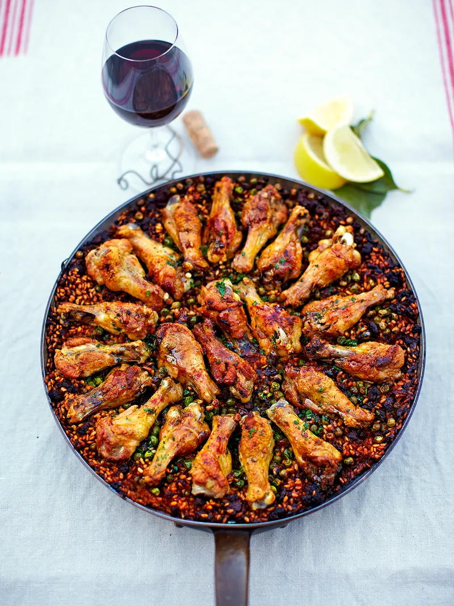

Chicken ‘paella’

“This paella-style dish is a simple one-pan meal that makes the most of tasty and cheap chicken drumettes. (This is the meaty upper part of a chicken wing – if separating your own wings, keep the tips and use them to make soup or stock.) If you’re feeling flush, add a pinch of saffron to the tomato pureé for a more complex flavour, but it’s still nice and smoky without.”
Ingredients
- 400 g quality chorizo
- 1 small onion
- 50 g jarred piquillo peppers
- ½ a bunch of fresh flat-leaf parsley
- 22 free-range chicken drumettes
- 2 tablespoons extra virgin olive oil
- 1 teaspoon smoked paprika
- 2 tablespoon tomato pureé
- 400 g Bomba paella rice
- 120 ml white wine
- 750 ml organic chicken stock
- 200 g frozen peas
- 1 lemon
Instructions
- Preheat the oven to 180ºC/gas 4.
- Slice the chorizo, peel and finely dice the onion, and finely dice the peppers. Pick and finely chop the parsley.
- Season the drumettes all over with sea salt and black pepper. Place a 30cm ovenproof sauté pan over a medium-high heat, add the oil, then add the chicken drumettes, in batches, and brown well on all sides. Remove the chicken from the pan and set aside.
- Add the chorizo and onions to the pan, and cook until the onions are softened – about 4 minutes. Add the piquillo peppers, paprika and tomato pureé, season and cook until the tomato pureé bubbles.
- Add the rice to the pan and stir well to coat it evenly with the tomato mixture. Cook the rice for about 3 minutes.
- Add the wine, stir through and bring to the boil. Once the rice has absorbed the wine, add 750ml hot water or stock, then stir in the peas and half the parsley. Arrange all of the chicken drumettes on top of the rice, in a spoke pattern.
- Bring the paella back to the boil then transfer to the oven and bake, uncovered, for 30 minutes, or until the rice is nice and tender.
- Remove the paella from the oven, cover lightly with foil and leave to rest for about 10 minutes.
- Serve with the rest of the parsley on top and lemon wedges on the side.
Nutrition per serving
of an adult's reference intake